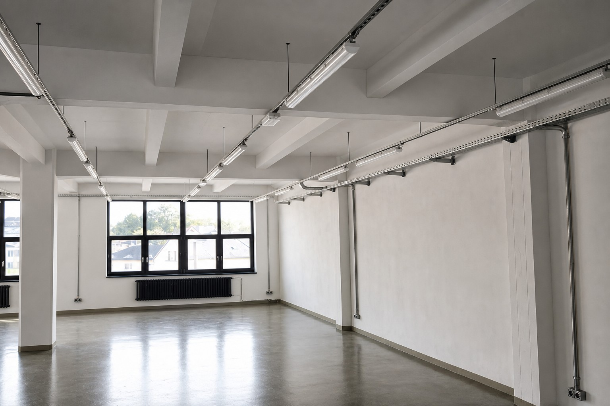

Reference — TOSTA Plesná — industriální elektroinstalace
Podíleli jsme se na kompletní realizaci elektroinstalace (silnoproudé rozvody, požární rozvody, nouzové osvětlení, elektronická požární signalizace — EPS, zabezpečení — EZS, systém přivolání pomoci) v nově zrekonstruované budově bývalé textilní továrny TOSTA ve městě Plesná.
Kompletní elektroinstalace je vedena přiznaná v průmyslovém duchu s důrazem na zachování historie objektu. Industriální instalace neznamenala ustoupení z požadavků na estetický vzhled odpovídající výstavním prostorám. Instalace prokázala řemeslnou zručnost a zkušenost našich pracovníků.
Stavba byla podpořena v rámci projektu „Česko – bavorské válečné a poválečné expozice a společná geologická minulost“.